Getting Started
Analyzing Large Metagenomics Datasets
Flint is a metagenomics profiling pipeline that is built on top of the Apache Spark framework, and is designed for fast profiling of metagenomic samples against a large collection of reference genomes. Flint takes advantage of Spark's built-in parallelism and streaming engine architecture to quickly map reads against a large reference collection of bacterial genomes.
Deployment & Installation
Flint runs on Spark, and the current version is tuned for Amazon's EMR service. While the Amazon-specific code is minimal, we are not yet supporting Spark clusters outside of EMR. A Flint project consists of multiple pieces (outlined below), and you will need to stage the genome reference assets and machine configurations before launching a cluster. The steps are:
- Asset Staging: Upload the bacterial reference genomes to an accessible data bucket in Amazon's S3 storage, along with configuration scripts for the cluster.
- EMR Cluster Launch: Launch an EMR cluster that will be configured with bootstrap actions and steps that you staged in the previous step.
- Accessing the Cluster: Connect to the cluster that you just created. You can connect through SSH or through a SFTP client.
- Source Code Deployment: Upload the main Flint python script, along with utilities for copying the reference shards into each cluster node, and a template of the 'spark-submit' resource file, into the cluster's master node.
- Terminating a Cluster: Any cloud provider will charge you for the time you use, so its critical that you terminate the clusters after you are done using them.
The following section(s) contain details on each of the above steps. If you have any questions, comments, and/or queries, please get in touch with the project's maintainer linked at the footer of this page.
Asset Staging
This section involves two (2) parts: the upload of the bacterial genomes into a location that is accessible by the worker machines in the cluster, and the upload of two configuration scripts that the EMR launch procedure will use to provision the cluster.
Bacterial Genomes
The bacterial genomes are the largest asset that you will upload to your S3 bucket. S3 storage prices change, so please check that the bucket you are uploading to has the capacity to host the genome collection. In the Flint publication, we used a bacterial genome collection from Ensembl (v.41) that was partitioned into 64 shards, with each shard going to a single machine. We also provide genome collections for Ensembl (v.41) partitioned into 128, 256, and 512 shards, which can be used in clusters of those sizes.
Each shard collection contains subdirectories that contain the corresponding Bowtie2 index files. You will need to copy all the shards for a given size (64, 128, etc.) into an S3 bucket that is accessible to your EMR cluster. There is a script in Flint that will then copy the shards into each worker node. This only needs to be done once per cluster setup.
Cluster Configuration
The cluster is configured with two (2) scripts that are provided to the EMR service when a cluster is created. These two files need to be uploaded to an S3 bucket that is accessible to EMR so that you can select them in the cluster creation step.
The first script is a JSON file that is used in the first step of the cluster creation, "Software and Steps", below — this is the JSON file that you specify in the "Software Settings" part. The second is a BASH file that defines what software will be loaded into each machine of the cluster (master and worker nodes). The BASH script defines environment variables, sets up the required directories, and loads the Bowtie2 aligner. This BASH file is used the "General Cluster Settings" steps below, and is the file that is pointed to by the "Bootstrap Actions" in the configuration.
EMR JSON Software Setting
The EMR software settings are simple, and they specify the particulars that will be used to spin-up a Spark cluster.
EMR Bootstrap Action
The bootstrap action is a little more complicated, and it defines all the software that each machine will contain. The BASH script for this is located here, or in the "amazon-emr" directory of the Flint project, under the folder "bootstrap actions".
The script is also available as a github gist.
You will need to make a copy of this script, change line number "49" so that it points to the root bucket name in which you uploaded the file so that the EMR setup can pick it up. The variable "SOURCE_BUCKET_NAME=s3-bucket-name" in line 49 defines the bucket name in which you are staging your assets in.
# Edit line 49 to match your bucket's name.
SOURCE_BUCKET_NAME="s3-bucket-name"
EMR Cluster Launch
Flint is currently optimized for running on AWS, and on the EMR service specifically. You will need an AWS account to launch an EMR cluster, so familiarity with AWS and EMR is ideal. If you are not familiar with AWS, you can start with this tutorial. Please note that the following steps, and screenshots, all assume that you have successfully signed into your AWS Management Console.

In the management console main page, you can search for "EMR"; this will take you to the EMR dashboard, which will load with the clusters you have previously created (if any). Click on the Create Cluster button to start.

This will take you to the "Create Cluster - Quick Options" configuration page. You can launch a cluster in this page right away, but we'll go ahead and click on the "Go to advanced options" link to launch a cluster with some specific changes required for Flint.

The "Advanced Options" has four (4) steps that you have to configure, these are:
We'll go through each one, and configure them step-by-step bellow.1. Software and Steps
In this step of the configuration, we are going to tell the EMR service the basic software that our cluster will run on. Flint was tested and developed on EMR release "emr-5.20.0" but you should be able to select the latest release. If you see that you get an error with a particular release configuration, please submit an issue.
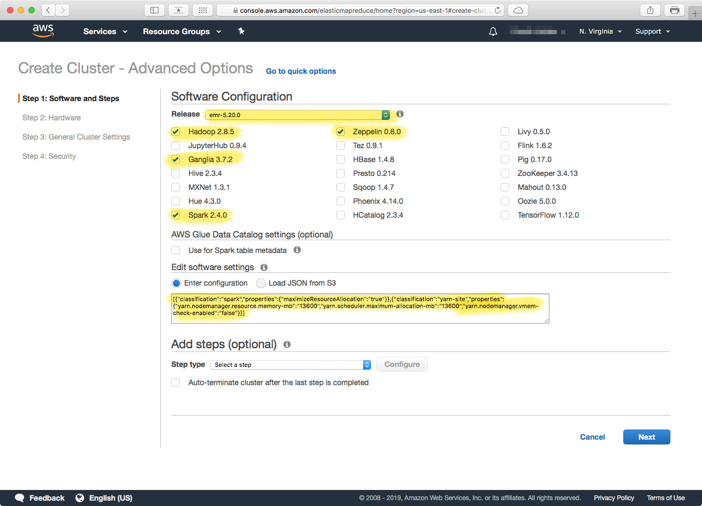Make sure the highlighted items in the above screenshot are selected, and then copy the following code for the software settings configuration: You can also view the gist in github. These settings are the ones described in the EMR JSON settings in the "Cluster Configuration" above. Click the "Next" button to proceed to the next step.
2. Hardware
In this step we'll configure the type and number of machines that the cluster will contain. Be very careful when selecting the instance types, as each type has a corresponding cost, and if you are not careful you can be charged a lot. You can view EMR instance type costs by going to this page.
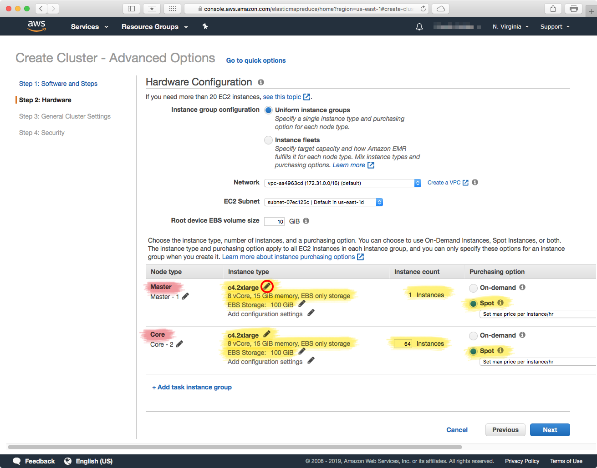In the Flint paper, we used instances of type "c4.2xlarge" for both the "Master" and "Worker" nodes. You can change the instance types by clicking on the "pencil icon (circled red) in the above screenshot, and then changing the instance type. The worker nodes are configured in the "Core" section, and you can change the number of worker nodes that you need — here, we selected 64. Note that this has to match the number of partitions of your genome references.
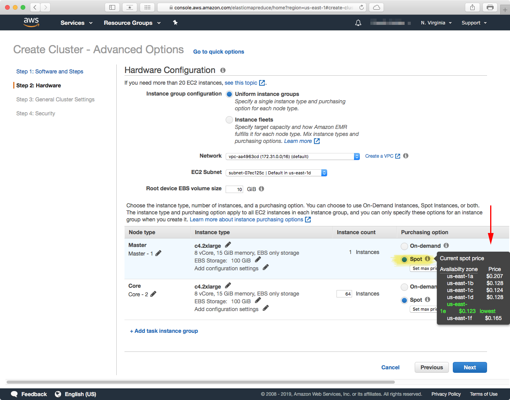After you have selected the instance type, and number of them, you can obtain a lower price per machine by selecting the "Spot" purchasing option (see above). Hovering over the "information" icon should bring up a menu with the list of current spot-market prices for the instance you selected. In the paper, the "c4.2xlarge" instances were priced at $0.123 USD per hour per machine. In this page you can also select the maximum amount that you are willing to pay for an instance, in our case we specified $0.159 USD.
3. General Cluster Settings
In this section we will configure the actual software that each machine will contain. Custom Python libraries, the Bowtie2 aligner, etc. are all loaded in this step. To start you can give your cluster a name, and select a location were deployment and runtime logs will be stored -- note these locations have to be in a S3 bucket that you have acess to.
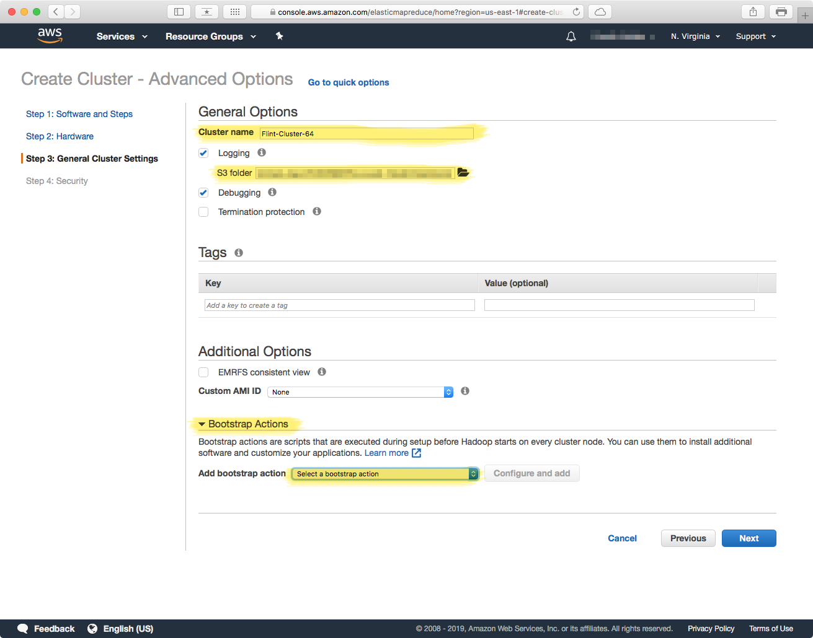Bootstrap Actions
The critical section in this step is the Bootstrap Actions — this is the part in which you provide a script that will provision each machine with the required software. In the "Bootstrap Actions section, select the "Custom action" option in the "Add bootstrap action" dropdown. This will enable the "Configure and add" button, which will allow you to select a location in an S3 bucket that contains the script with the steps to provision each machine.
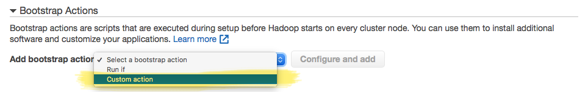The script that provisions each machine is a BASH shell-script, and you have to have uploaded it to an accessible S3 location that you can point to. This BASH script is the file from the "Cluster Configuration" section above, and the one under the "Bootstrap Action" part.
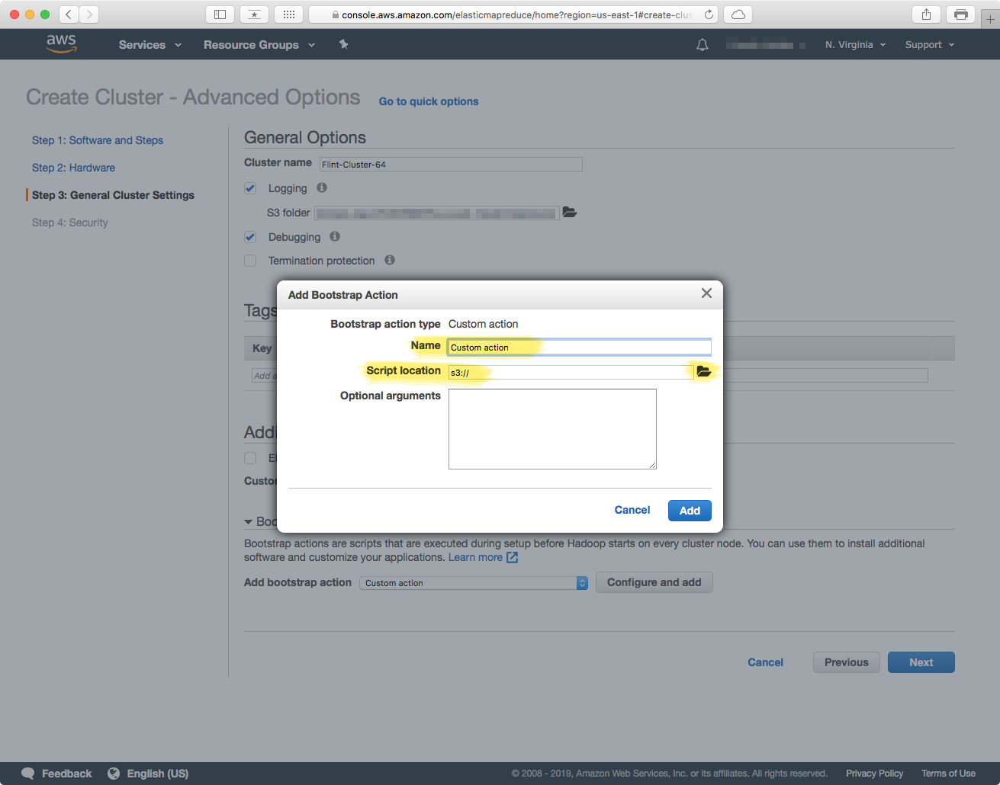Give the action a name, and then click on the "Add" button. Once the action has been successfully added, click "Next" to proceed to the next section.
4. Security
The last step involves setting the access credentials to the cluster. In the "Security Options" section you have to select the EC2 key pair for the IAM User that will be accessing the cluster. Double-check that the Master and Core (worker) nodes have the security group that includes the IAM user, and you should be good to go. Click on the Create Cluster button to finish.
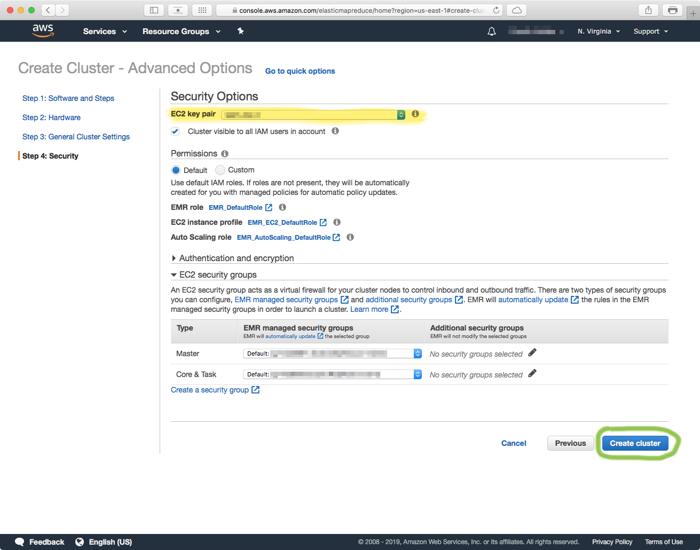Finish
After you click the Create Cluster button you will be taken to the details page of the cluster you just created. The page will display status messages and give you an idea of the progress of the launch.
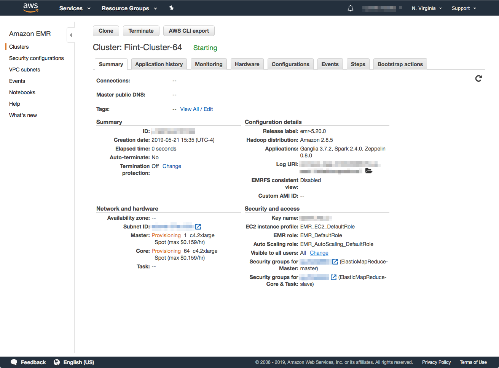Depending on the resources (instance types) that you requested, along with spot-market availability (if you used it), the cluster should be ready in about 8-15 minutes. The cluster is ready to use when the status message: "Waiting" Cluster ready after last step completed." appears, as well as both the Master and Core nodes show a status of "Running".
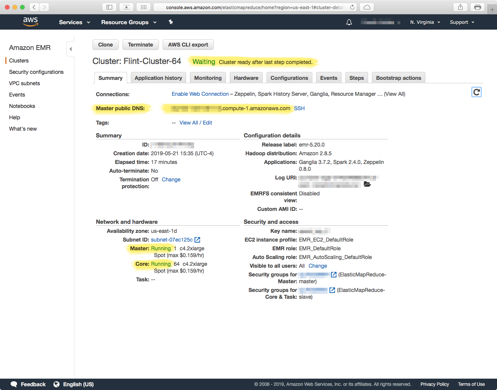Make a note of the entry for "Master public DNS" as you will need it to connect to the cluster later on.
Accessing the Cluster
Once you have successfully launched the cluster you can connect to it via SSH or SFTP to launch jobs and upload files respectively. The sections below outline how to connect to the Master node, and also how to access diagnostic and monitoring dashboards.
SSH
The URL for connecting to the cluster is displayed next to the "Master public DNS" label, or you can click on the "SSH" link to bring up a dialog with the exact command you can copy/paste into your SSH client (terminal.ap, etc.).
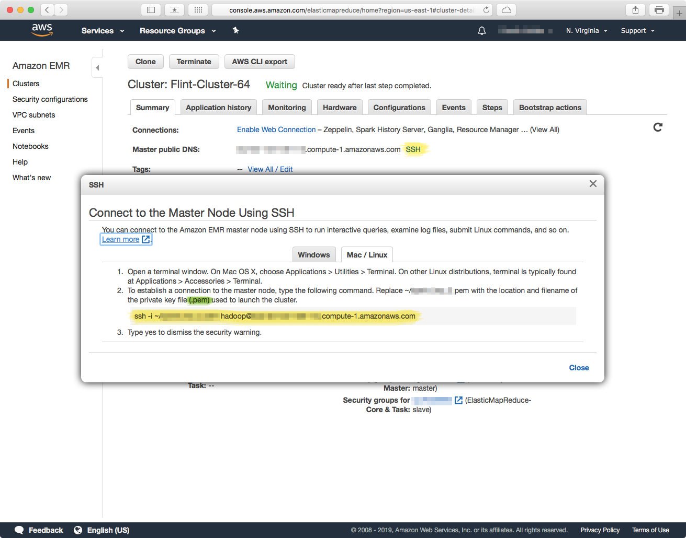Note:You will need a copy of the same IAM User certificate you created the cluster with to connect to the cluster with SSH. In the command that EMR gives you, the "-i" option to the "ssh" command specifies the path to the certificate.
Just copy/paste the url that EMR gives you into an SSH command in an SSH client such as Terminal.app in macOS, specify the certificate with the "-i" parameter and make sure that you have the user as "hadoop" — its the default EMR username.
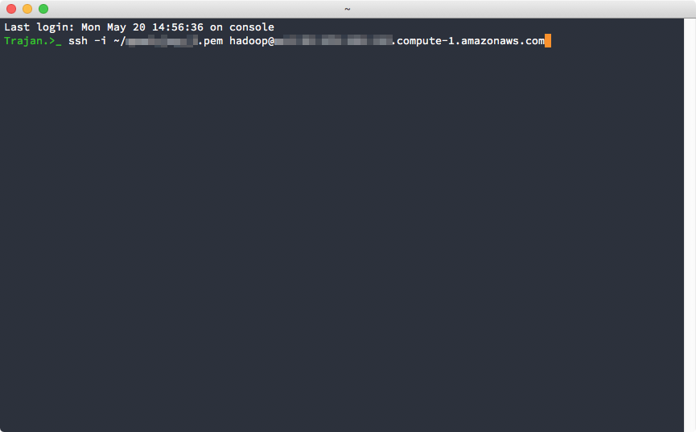Since this is the first time we are connecting to the cluster, SSH will ask us if we want to add the cluster's IP address to the list of known hosts, go ahead and type "yes" and you will connect.
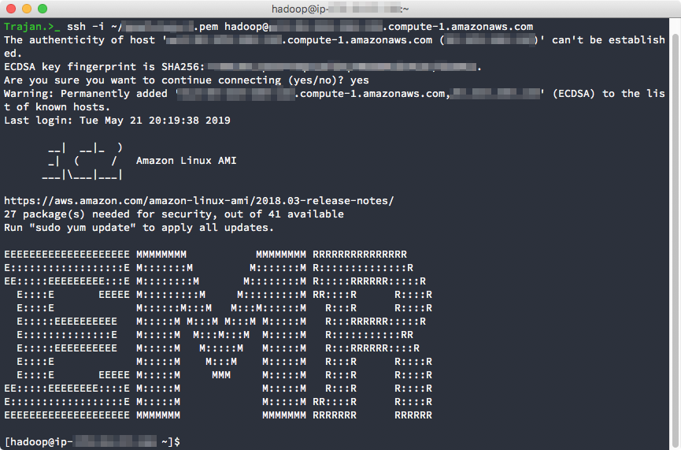Once you see the ASCII logo for "EMR" you are successfully connected to the Master node. From here, you can jump to any of the other Worker machines by using the private key certificate that you launched the cluster with and used to connect to the master node.
SFTP
You can upload files to the cluster through an SFTP client such as Filezilla or Transmit 5. If you are using Transmit on macOS, the address of the cluster should be the same that you used in the SSH command, or the one that EMR gives you next to the "Master public DNS" label. The User Name should be "hadoop" and for the password just use the same private key certificate (IAM user) that you setup the cluster with.
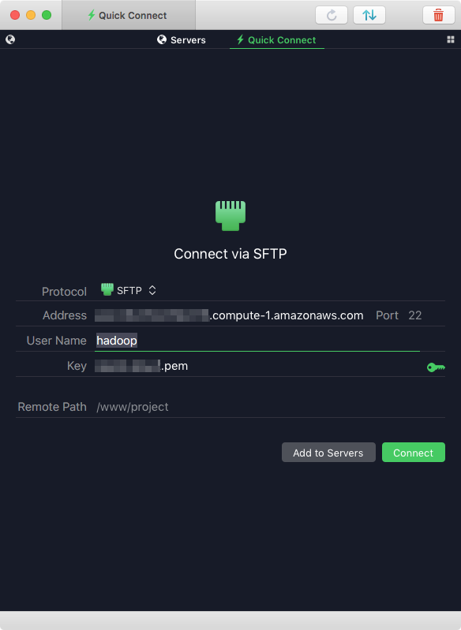After you connect, you will be taken to the home directory of the hadoop user.
Ganglia Instrumentation
You can monitor the health of your cluster, as well as track resource usage with Ganglia. The Ganglia dashboard is not readily accessible, and you need to do some setup before you can connect to it. The link in the titled "Enable Web Connection has detailed instructions on how to do this, but briefly: you have to establish an SSH tunnel from an SSH client (Terminal.app in macOS), and setup FoxyProxy in a supported Web Browser.
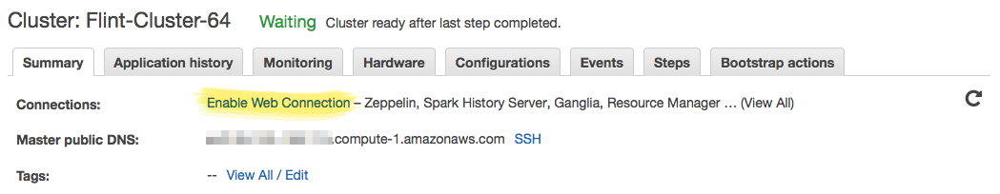Establishing an SSH tunnel, and FoxyProxy instructions:
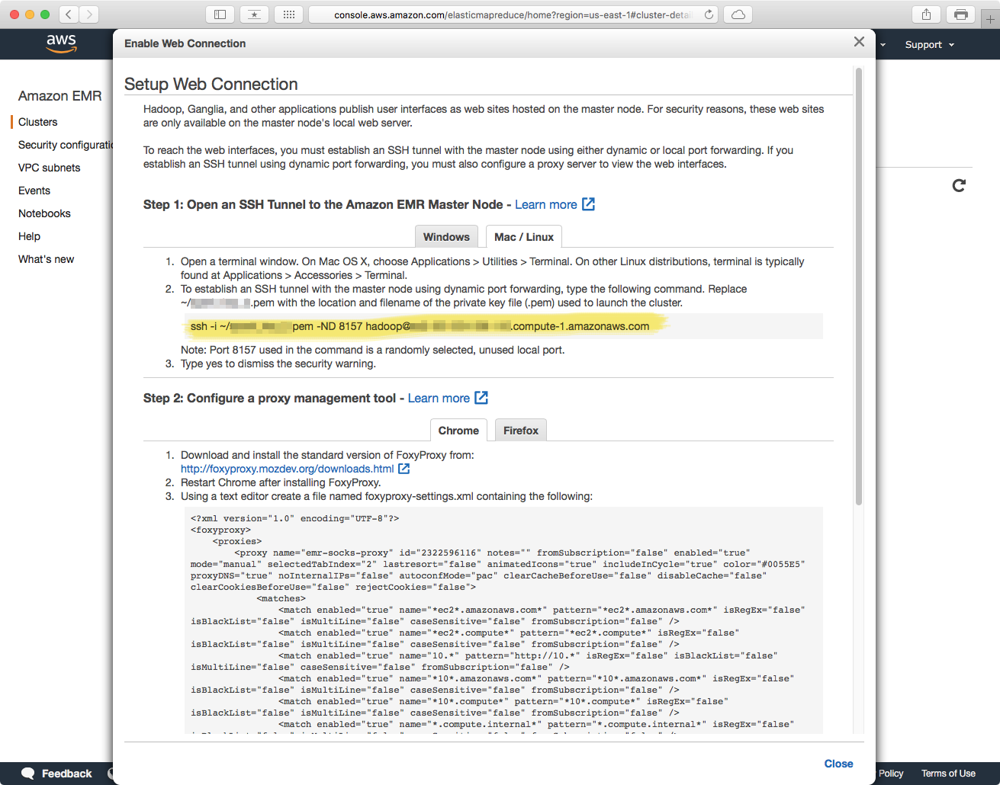Once you have setup the SSH tunnel and FoxyProxy, then you can access the Ganglia dashboard by adding "/ganglia" to the end of the "Master public DNS" address. Note that this has to be done in the same browser that you installed and configured FoxyProxy, and after you started the SSH tunnel. Order matters, so first you start the SSH tunnel, and then you access the web interface.
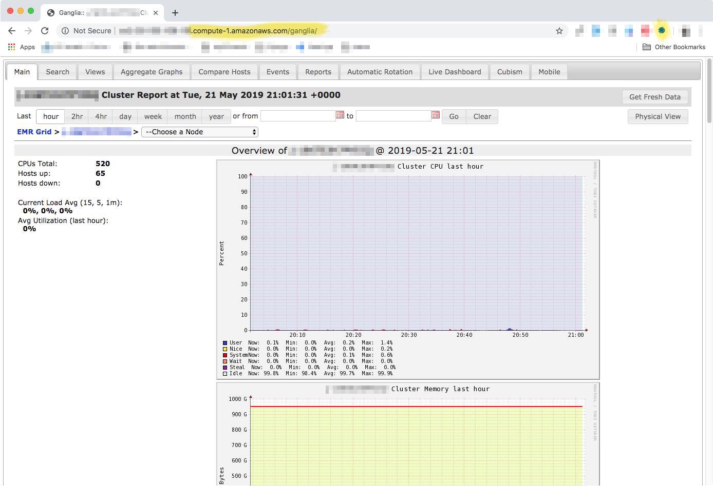Ganglia information for all nodes.
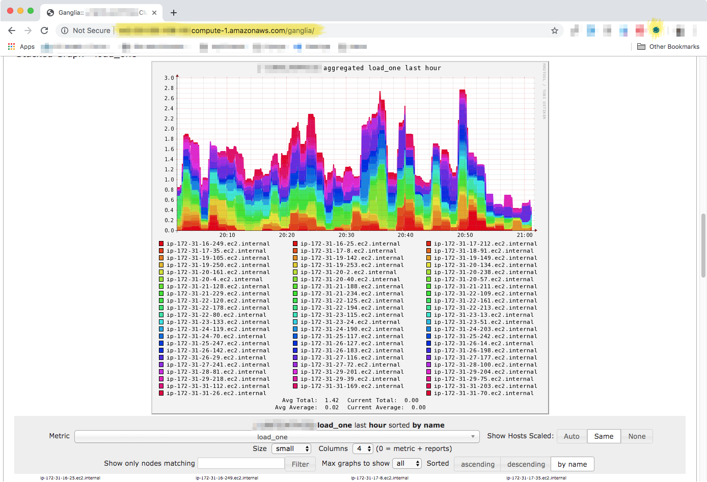Source Code Deployment
Terminating a Cluster
In AWS, Amazon charges you for the time you use the cluster, and if you do not terminate the cluster after you are done with it, the bill can be quite large. Terminating a cluster will stop all jobs and any code and/or resources you uploaded to the cluster will be lost. Terminating the cluster is easy, in the cluster details page, just click on the "Terminate" button.
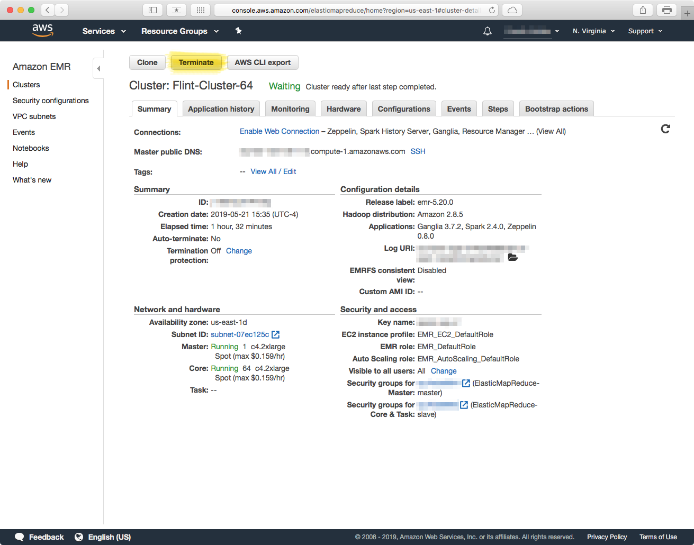Clicking on the "Terminate" button will bring up the "Terminate" dialog. Click on "Terminate" to stop the cluster.
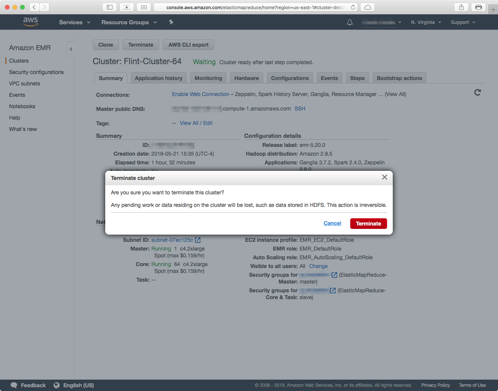When the status of the cluster is displayed as Terminated, the cluster is no longer available, but note that it will still be visible in the cluster list in the main EMR dashboard.
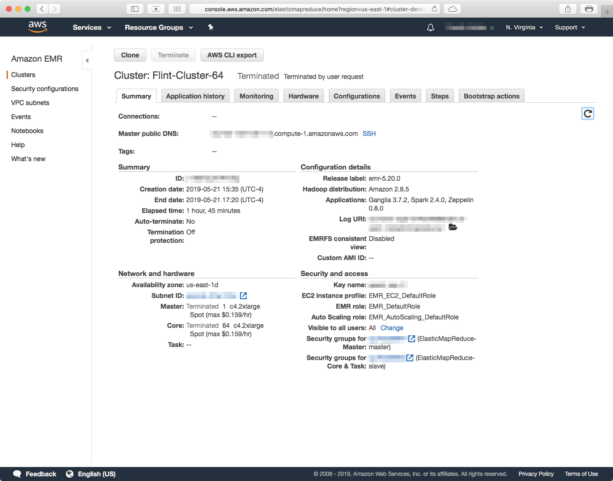A cool part of having the cluster details available after you terminated a cluster is that you can "Clone" it (relaunch a new cluster with the same parameters and configurations of a previous cluster) or copy a AWS CLI command to relaunch a cluster right from the command line.
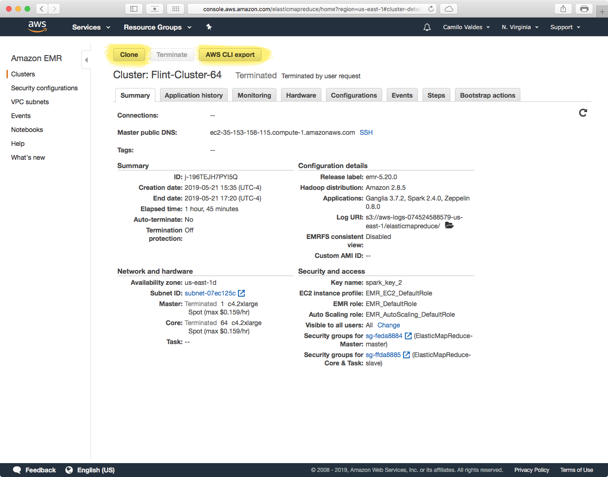Code forth and prosper. 🖖
Flint Metagenomics
Flint is a metagenomics profiling pipeline that is built on top of the Apache Spark framework, and is designed for fast real-time profiling of metagenomic samples against a large collection of reference genomes.
Resources
Documentation
Publication
Flint can be referenced by using the citation:
- Valdes, Stebliankin, Narasimhan (2019), Large Scale Microbiome Profiling in the Cloud, ISMB 2019, in review.